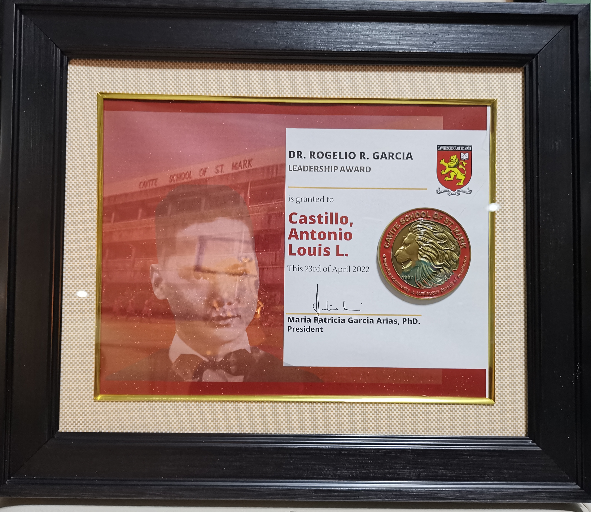

I am currently a fourth-year Bachelor of Science in Information Technology student at De La Salle University–Dasmariñas, specializing in Web Development. Throughout my academic journey, I have gained experience in both front-end and back-end development.
However, over time, I discovered that my true passion lies in front-end development. I genuinely enjoy designing visually appealing, user-friendly, and accessible interfaces. I believe that good design is not just about aesthetics, but also about usability and clarity.
Beyond my interest in technology, I am also passionate about the creative arts, particularly photography and video editing. I have a keen eye for capturing compelling subjects that catch my attention. Additionally, I am experienced in editing various types of videos for formal, academic, and personal purposes. I know how to organize video content, manage pacing, and ensure a smooth visual flow. I am well-versed and knowledgeable in using different editing softwares, including:
I am an extroverted and adaptable individual, which allows me to work well with people in diverse environments. This personality has helped me develop strong leadership skills over the years, often taking charge in group projects to organize tasks and guide team members. I focus on clarity, accountability, and creating a collaborative environment where everyone contributes.
Recognized as Class Valedictorian during Senior High School and honored with the Flora Janet Sarino Garcia Award, presented to students who demonstrate outstanding academic achievement and excellence.

Recipient of the Dr. Rogelio R. Garcia Leadership Award, recognizing exemplary leadership, initiative, and meaningful contributions through active participation in the Student Government Council. Actively participated in planning, coordination, and implementation of student-led programs and activities, reflecting consistent dedication to leadership, collaboration, and student representation.
Consistent growth and service throughout the years.